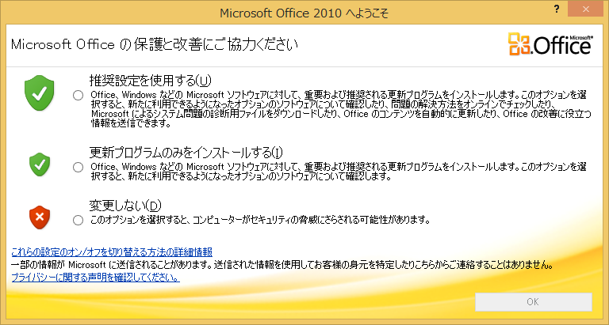
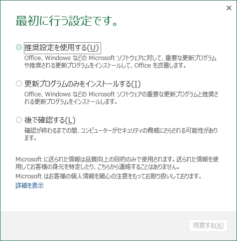
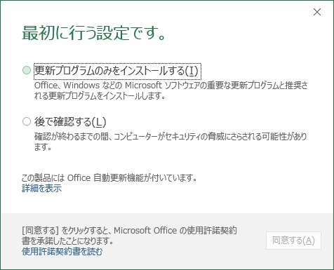
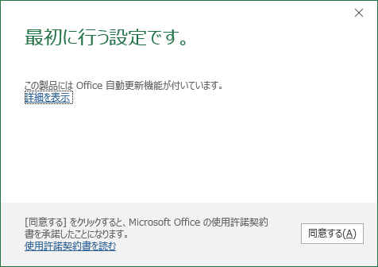

(※ 2017 年 8 月 16 日に Japan Office Support Blog に公開した情報のアーカイブです。)
こんにちは、Office サポート チームです。
今回は「最初に行う設定です」 ダイアログの制御方法についてご案内いたします。
「最初に行う設定です」 ダイアログについて
Office アプリケーションをインストール後に最初に起動すると、以下のような 「最初に行う設定です」 ダイアログが表示されます。
この設定は、ユーザーごとに設定いただく項目となります。
この画面は、Office カスタマイズ ツールや、グループポリシー、レジストリにて非表示にすることが可能です。
Office 2010 の場合 :

Office 2013 の場合 :

Office 2016 の場合 :

Office 365 ProPlus の場合 :

制御方法
Office カスタマイズ ツール、グループ ポリシー、レジストリーを利用した具体的な方法についてご説明いたします。
Office 2016 をもとに記載しておりますが、Office 2013 、Office 2010 でも同様の動作になります。
なお、レジストリのパスは、Office 2013 では、「16」 が 「15」 となり、Office 2010 では、「16」 が 「14」 となります。
方法 1 . Office カスタマイズ ツール (OCT) を利用する
-—————–
OCT を利用してOffice アプリケーションを展開する場合には、以下の設定をすることでこの画面を非表示にすることが可能です。
1-1. OCT を起動して、左側のペインで [機能] の [ユーザー設定の変更] を選択します
1-2. 右側のウィンドウで [Microsoft Office 2016] - [その他] を選択します
1-3. “推奨設定ダイアログを表示しない” を [有効] にします
1-4. OCT の [ファイル] - [名前を付けて保存] から、任意の名前で MSP ファイルとして保存します
1-5. Office 2016 のインストール ポイント内の Updates フォルダに MSP ファイルを配置するか、Setup.exe の引数に /adminfile を付けて MSP ファイルを指定します
なお、クイック実行形式 (C2R) の Office 製品では、OCT を利用してカスタム インストールすることはできませんので、この方法では制御できません。
方法 2 または 方法 3 をご参照ください。
C2R 形式につきましては、以下の本ブログにて詳しくご案内しております。
タイトル : クイック実行形式 (C2R) と Windows インストーラー形式 (MSI) を見分ける方法
URL : https://blogs.technet.microsoft.com/officesupportjp/2016/09/08/howto_c2r_or_msi/
OCT につきましては、以下の弊社サイトにて詳しくご案内しております。
タイトル : Office Customization Tool (OCT) の概要
URL : https://technet.microsoft.com/ja-jp/library/cc764476(v=office.12).aspx
方法 2 . グループ ポリシーを利用する
-—————–
グループ ポリシーを利用して、「最初に行う設定です」 の画面を非表示にすることも可能です。
2-1. グループ ポリシー エディター を起動して、左側のペインで [ユーザーの構成] - [管理用テンプレート] - [Microsoft Office 2016] - [その他] を選択します。
2-2. 右側のウィンドウで [推奨設定ダイアログを表示しない] を選択します。
2-3. [推奨設定ダイアログを表示しない] の項目画面で、[有効] を選択し [適用] をクリックします。
このグループ ポリシーの設定は、以下のレジストリ値を追加することでも同じ効果となります。
キー : HKEY_CURRENT_USER\Software\Policies\Microsoft\Office\16.0\Common\General
種類 : REG_DWORD
名前 : optindisable
値 : 1 (有効)
2-4. Office 365 ProPlus の場合
Office 365 ProPlus の場合は、2-3. のグループ ポリシーの設定と合わせて使用許諾契約書への同意を設定するため、以下のレジストリ値を追加します。
キー : HKEY_CURRENT_USER\Software\Policies\Microsoft\Office\16.0\Registration
種類 : REG_DWORD
名前 : AcceptAllEulas
値 : 1
グループ ポリシーにつきましては、以下の弊社サイトにて詳しくご案内しております。
タイトル : グループ ポリシー管理での ADMX ファイルの使用に関するステップ バイ ステップ ガイド
URL : https://technet.microsoft.com/ja-jp/library/cc709647(v=WS.10).aspx
方法 3 . レジストリで設定する
-—————–
直接レジストリに以下の値を設定することで、「最初に行う設定です」 の画面を非表示にすることが可能です。
3-1. レジストリ エディターを起動して、以下のレジストリ値を追加します。
キー : HKEY_CURRENT_USER\Software\Microsoft\Office\16.0\Common\General
種類 : DWORD
名前 : ShownFirstRunOptin
値 : 1 (初回起動済み)
3-2. Office 365 ProPlus の場合 Office 365 ProPlus の場合は、上記の 3-1. の ShownFirstRunOptin のレジストリと合わせて使用許諾契約書への同意を設定するため、以下のレジストリ値も追加します。
キー : HKEY_CURRENT_USER\Software\Microsoft\Office\16.0\Registration
種類 : REG_DWORD
名前 : AcceptAllEulas
値 : 1
* 補足
-——-
[最初に行う設定です] ダイアログをこれらの方法で非表示にした場合は、[後で確認する] を選択したときと同じになります。
参考 URL
このダイアログにつきましては、以下の弊社サイトでもご案内しておりますのでご紹介いたします。
タイトル : Office 2013 のプライバシー オプションの計画
URL : https://technet.microsoft.com/ja-jp/library/cc179123(v=office.15).aspx#about
タイトル : Office 2010 のプライバシー オプションの計画
URL : https://technet.microsoft.com/ja-jp/library/cc179123(v=office.14).aspx
– 注意事項 本情報の内容 (添付文書、リンク先などを含む) は作成日時点でのものであり、予告なく変更される場合があります。